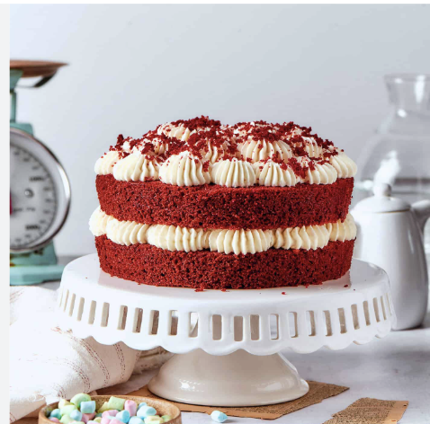

Red Velvet Cake
The first recipe is a true classic—and one that’s as beautiful as it is delicious! Red velvet cake is soft, tender, and perfectly balanced, with a light cocoa flavor and a subtle tang that makes every bite rich without being too heavy. Paired with a smooth, creamy frosting, it creates a melt-in-your-mouth experience that feels both comforting and special.
There’s something unforgettable about red velvet cake, from its vibrant color to its delicate, velvety texture. It’s perfect for celebrations or simply when you want to bake something a little extra special. Give it a try and enjoy every soft, flavorful bite—hope you love this red velvet cake as much as I do!

Ingredients
| 4 Eggs |
1 Cup of canola oil |
1/2 cup of Butter |
1 teaspoon Baking powder |
1 Tablespoon Vanilla extract |
2 cup of White sugar |
3 cups of Flour |
2 Tablespoons of Cocoa powder
| 2 cups of Chocolate chips |
Liquid red food coloring
|
Recipe
- Preheat oven to 350°F (177°C). Grease two 9-inch cake pans, line with parchment paper rounds, then grease the parchment paper. Parchment paper helps the cakes seamlessly release from the pans.
|
- Whisk the flour, baking soda, cocoa powder, and salt together in a large bowl. Set aside.
|
- Using a handheld or stand mixer fitted with a paddle attachment, beat the butter and sugar together on medium-high speed until combined, about 1 minute. Scrape down the sides and up the bottom of the bowl with a rubber spatula as needed. Add the oil, egg yolks, vanilla extract, and vinegar and beat on high for 2 minutes. (Set the egg whites aside.) Scrape down the sides and up the bottom of the bowl with a silicone spatula as needed.
|
- Add the eggs one at a time, mixing well after each addition. Then add the vanilla extract and beat the mixture for about 1 minute, or until it looks light and slightly airy.
|
- With the mixer on low speed, add the dry ingredients in 2-3 additions alternating with the buttermilk. Beat in your desired amount of food coloring just until combined. I use 1-2 teaspoons gel food coloring.
|
- In a separate medium bowl, vigorously whisk or beat the 4 egg whites on high speed until fluffy peaks form as pictured above, about 3 minutes. Gently fold into cake batter. The batter will be silky and slightly thick.
|
- Divide batter between cake pans. Bake for 30-32 minutes or until the tops of the cakes spring back when gently touched and a toothpick inserted in the center comes out clean. If the cakes need a little longer as determined by wet crumbs on the toothpick, bake for longer. However, careful not to overbake as the cakes may dry out. Remove cakes from the oven and cool completely in the pans set on a wire rack. The cakes must be completely cool before frosting and assembling.
|
- In a large bowl using a handheld or stand mixer fitted with a whisk or paddle attachment, beat the cream cheese and butter together on medium-high speed until smooth, about 2 minutes. Add the confectioners’ sugar, vanilla extract, and a pinch of salt. Beat on low speed for 30 seconds, then increase to high speed and beat for 3 minutes until completely combined and creamy. Add more confectioners’ sugar if frosting is too thin or an extra pinch of salt if frosting is too sweet. Frosting should be soft, but not runny.
|